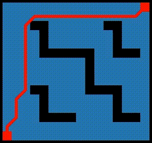
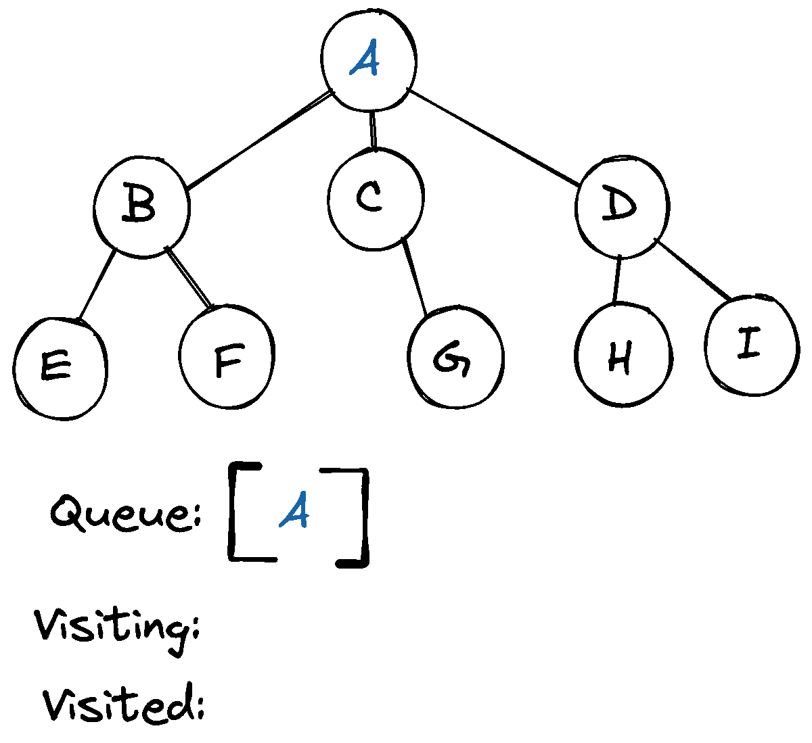
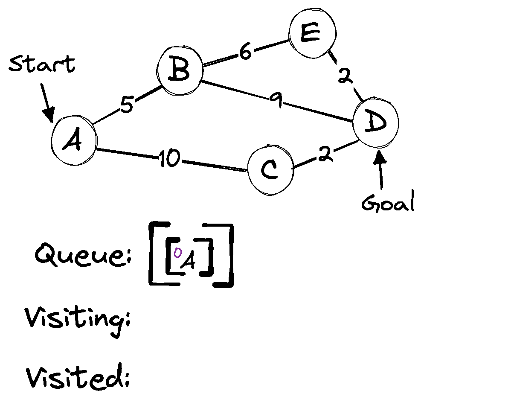
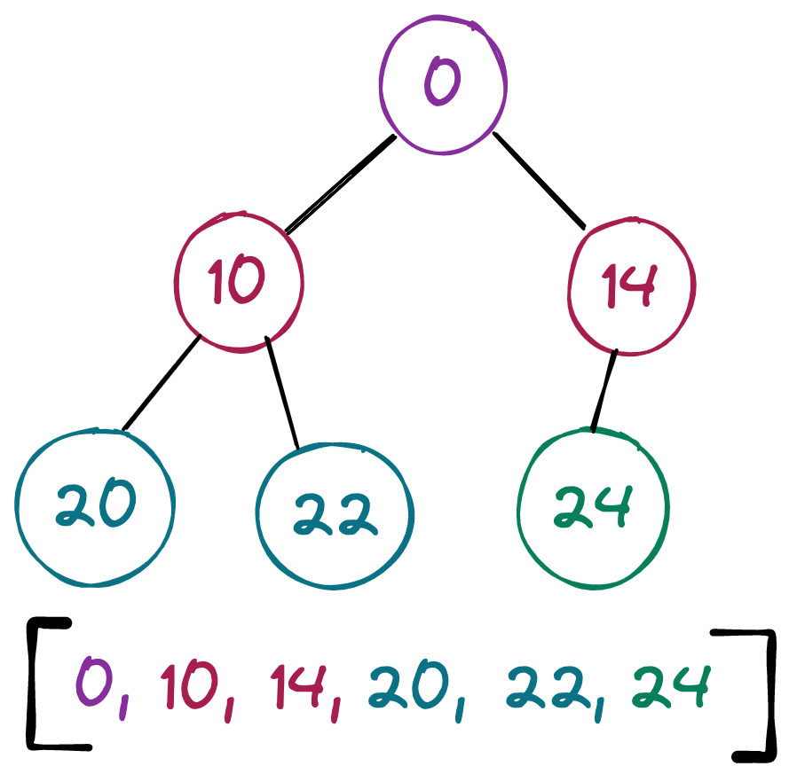

Path Planning With A*
Table of Contents
In this blog post, I'll walk through my implementation of the A* path planning algorithm, including all of the source code used in the demos. I originally wrote this program in C++, to run on an Arduino, and then translated it line by line to JavaScript. So, this probably isn't the most idiomatic JavaScript code, but its nice in that it would be very straightforward to use this guide to implement this in a non-garbage-collected language.
The A* Search Algorithm

Figure 1: Demo
Breadth First Search
Let's start with a very basic search algorithm: Breadth-First Search (BFS). Given a tree of nodes, we could search for a specific node by first visiting the root node, and then adding its children to a queue. From there, we would visit each node added to the queue, and for each, add its children to the queue.

Figure 2: Breadth First Search
Dijkstra's Shortest Path
Dijkstra's famous algorithm improves upon BFS by using a priority queue, in which the elements are ordered based on the cost associated with arriving at each node. You could imagine a graph in which each node is a destination, and the edges are the roads between destinations. Associated with each edge is a cost which could represent the time it would take to traverse the road.
This time, our queue will not contain individual nodes, but paths.

Figure 3: Dijkstra's Shortest Path Algorithm
A*
The A* search algorithm builds upon Dijkstra's algorithm by considering not only the cost associated with reaching a node, but also an estimate of the cost to reach the goal. Imagine every node in the previous graph contained a number which was the distance, as the crow flies, to the goal. This number would be weighed equally with the cost to reach a node when ordering the priority queue.
Grid Implementation
In this demonstration, I'm going to show you how I used A* in the context of an occupancy grid to find the shortest path between the two red squares in the grid, while avoiding obstacles. To start, we'll need a way to represent our grid. For convenience, we should have a human readable way to initialize our grid. I've made it so the grid can be initialized from a string.
0: let init_grid_str = ` 1: ................ 2: ................ 3: ...##......##... 4: ....#.......#... 5: ....#.......#... 6: ....######..###. 7: .........#...... 8: .........#...... 9: .........#...... 10: ...##....####... 11: ....#.......#... 12: ....#.......#... 13: ....####....###. 14: ................ 15: ................ 16: `.trim(); 17: 18: const EMPTY = 0; 19: const OCCUPIED = 1; 20: const END_POINT = 2; 21: 22: class Grid { 23: constructor(grid_str) { 24: const rows = grid_str.split('\n'); 25: this.nRows = rows.length; 26: this.nCols = rows[0].length; 27: this._grid = Array(this.nCols * this.nRows).fill(EMPTY); 28: rows.forEach((row, y) => { 29: row.split('').forEach((char, x) => { 30: this._grid[y * this.nCols + x] = char == '.' ? EMPTY : char == '#' ? OCCUPIED : END_POINT; 31: }); 32: }); 33: 34: this.start_idx = this.nCols * (this.nRows - 1); // Traverse from the top right 35: this.end_idx = this.nCols - 1; // to the bottom left corner 36: this._grid[this.start_idx] = END_POINT; 37: this._grid[this.end_idx] = END_POINT; 38: this.path_capacity = 100; 39: this.path_size = 0; 40: this.path = Array(this.path_capacity); 41: }
You may have noticed that I set a path_capacity variable. This can be used to limit the memory consumption of our path finding algorithm, which would be useful if we were working with limited hardware.
Internally, the grid is represented as a one dimensionally array, and in the above code, you can see how we can translate \((x,y)\) coordinates to grid indices mathematically on line 30: y * this.nCols + x. We'll provide an interface for accessing grid elements by their \((x,y)\) coordinates.
43: set_at(val, x, y) { 44: if (x < 0 || y < 0) { 45: return; 46: } 47: this._grid[y * this.nCols + x] = val; 48: } 49: 50: at(x, y) { 51: return this._grid[y * this.nCols + x]; 52: } 53: 54: idx_to_cartesian(idx) { 55: return [idx % this.nCols, Math.floor(idx / this.nCols)]; 56: }
We also need a way to estimate the cost associated with reaching our goal, from a given space on the grid. We can do this by taking the euclidian distance between a given grid space and the target grid space. \[d = \sqrt{(y_b - y_a)^2 + (x_b - x_a)^2}\]
58: distance(idx_a, idx_b) { 59: let [ ax, ay ] = this.idx_to_cartesian(idx_a); 60: let [ bx, by ] = this.idx_to_cartesian(idx_b); 61: 62: return Math.round(10 * Math.sqrt(Math.pow(by - ay, 2) + Math.pow(bx - ax, 2))); 63: } 64: 65: clear_path() { 66: this.path_size = 0; 67: }
I multiply by 10 and round the answer so that I can stick to integer values. I've also included a convenience method for clearing the path. That will be useful later.
At this point, we're ready to dive into our path planning.
Plotting A Course
69: plot_course() { 70: const pq_max_size = 10000; 71: let pq = Array(pq_max_size); 72: for (let i = 0; i < pq_max_size; i += 1) { 73: pq[i] = new PathNode(); 74: } 75: 76: pq[0].grid_idx = this.end_idx; 77: pq[0].parent = null; 78: pq[0].gCost = 0; 79: pq[0].hCost = this.distance(this.end_idx, this.start_idx); 80: let pq_size = 1;
The priority queue is implemented as an array of nodes. Each node has knowledge of its index in the grid, its parent on a path to it, the cost associated with reaching the node from the starting point, and the estimated cost associated with reaching the goal. pq_size is used to keep track of the size of our priority queue.
The priority queue is initialized with a node representing the desired end position along our path. This warrants some explanation. A reminder, I wrote this code to run on an Arduino, as the brains of an autonomous mobile robot. The thinking behind this was, if we run out of memory before the path is completed, we can retry the path planning with the new end goal as the final position in the path from the previous trial. This way, if we're able to work our way back to the start, we'll have confidence that there is a path to the end goal, even if the robot can't hold it in memory all at once.
We're also keeping track of the nodes we've previously explored.
82: const explored_max_size = pq_max_size; 83: let explored = Array(explored_max_size).fill(new PathNode()); 84: for (let i = 0; i < pq_max_size; i += 1) { 85: explored[i] = new PathNode(); 86: } 87: let explored_size = 0;
Based on the number of rows and columns, we can find the relative index of the neighboring grid spaces. Let \(c\) be the number of columns in the grid, and \(i\) be the grid index of the current node being visited.
\begin{align*} \begin{bmatrix} i - (c + 1) & i-c & i - c + 1) \\ i - 1 & i & i + 1 \\ i + c + 1 & i + c & i + c - 1 \end{bmatrix} \end{align*}89: // 5 6 7 90: // 4 X 0 91: // 3 2 1 92: const neighbors = [ 93: 1, this.nCols + 1, this.nCols, this.nCols - 1, -1, 94: (0 - this.nCols) - 1, (0 - this.nCols), (0 - this.nCols) + 1 95: ];
We're gonna search for a path to our goal until
- the goal has been reached,
- our priority queue runs out, or
- we reach the capacity limit of our priority queue, explored nodes array, or path.
We begin by dequeuing the highest priority node from our priority queue. We check to see if our destination has been reached. If so, we set the corresponding path by visiting the ancestors of the node, and return 0 to indicate success.
97: while (pq_size != 0) { 98: if (explored_size >= explored_max_size) { 99: return -5; 100: } 101: pq_size = pq_dequeue(pq, pq_size, explored, explored_size); 102: explored_size += 1; 103: 104: if (explored[explored_size-1].grid_idx == this.start_idx) { 105: this.path[0] = explored[explored_size-1].grid_idx; 106: this.path_size += 1; 107: let node = explored[explored_size - 1].parent; 108: for (let i = 1; node instanceof PathNode; i += 1) { 109: this.path[i] = node.grid_idx; 110: node = node.parent; 111: this.path_size += 1; 112: if (this.path_size == this.path_capacity && node instanceof PathNode) { 113: return -1; // Path capacity reached before completing path. 114: } 115: } 116: 117: return 0; 118: }
Having confirmed that our goal has not been reached, we can the add the node's neighbors to the priority queue. But we have to check that the index we find corresponds to an actual grid space. It may not if the currently visited node is along the boundaries of our grid.
120: for (let i = 0; i < 8; i += 1) { 121: if (explored[explored_size-1].grid_idx < this.nCols && i >= 5) continue; // first row 122: if (explored[explored_size-1].grid_idx % this.nCols == 0 && i >= 3 && i <= 5) continue; // first column 123: if (explored[explored_size-1].grid_idx % this.nCols == this.nCols - 1 && (i <= 1 || i == 7)) continue; // last column 124: if (Math.floor(explored[explored_size-1].grid_idx / this.nCols) == this.nRows - 1 && (i <= 3 && i >= 1)) continue; // last row 125: 126: let neighbor_idx = explored[explored_size - 1].grid_idx + neighbors[i];
For each of these valid neighboring grid spaces, we need to ask whether there is an obstacle their. If not, then we should add it to our priority queue, provided it's not already there. If it is in the priority queue already, may need to update the node to if a lower cost path exists.
127: if (this._grid[neighbor_idx] == OCCUPIED) { 128: continue; 129: } 130: 131: // // ask whether the neighbor_idx exists in the pq already 132: let in_pq = false; 133: let pq_idx = 0; 134: for (let i = 0; i < pq_size; i += 1) { 135: if (pq[i].grid_idx == neighbor_idx) { 136: in_pq = true; 137: pq_idx = i; 138: break; 139: } 140: } 141: // If so, the gCost and parent may need to be updated to reflect a lower cost path 142: if (in_pq) { 143: let new_gCost = explored[explored_size - 1].gCost + this.distance(explored[explored_size - 1].grid_idx, neighbor_idx); 144: if (new_gCost < pq[pq_idx].gCost) { 145: pq[pq_idx].gCost = new_gCost; 146: pq[pq_idx].parent = explored[explored_size - 1]; 147: pq_shift_up(pq, pq_idx); 148: } 149: } else { // otherwise, add a new PathNode to the queue 150: pq[pq_size].grid_idx = neighbor_idx; 151: pq[pq_size].parent = explored[explored_size - 1]; 152: pq[pq_size].gCost = explored[explored_size - 1].gCost + this.distance(explored[explored_size - 1].grid_idx, neighbor_idx); 153: pq[pq_size].hCost = this.distance(neighbor_idx, this.start_idx); 154: 155: pq_shift_up(pq, pq_size); 156: pq_size += 1; 157: 158: if (pq_size == pq_max_size) { 159: return -4; // Reached capacity for priority queue 160: } 161: } 162: } 163: } 164: 165: return 1; // Path not found 166: } 167: }
Next up, the PathNodes used in plot_course need to be implemented:
169: class PathNode { 170: constructor() { 171: this.grid_idx = null; 172: this.parent = null; 173: this.gCost = null; 174: this.hCost = null; 175: } 176: 177: less_than(other_node) { 178: return (this.gCost + this.hCost) < (other_node.gCost + other_node.hCost); 179: } 180: 181: greater_than(other_node) { 182: return (this.gCost + this.hCost) > (other_node.gCost + other_node.hCost); 183: } 184: }
Priority Queue
We still need to implement the functionality associated with our priority queue. In order for A* to be efficient, the priority queue must be efficient, so I'ved used a min-heap.

Figure 4: Min Heap Example
In order to traverse the tree, we'll need to be able to find the indices of the parent and children for a given node.
186: function pq_parent(i) { 187: return Math.floor((i - 1) / 2); 188: } 189: 190: function pq_left_child(i) { 191: return (2 * i) + 1; 192: } 193: 194: function pq_right_child(i) { 195: return (2 * i) + 2; 196: }
We'll also need a function to insert new nodes into our heap. We can do this by first appending the new node to the end of the end of our array, and then swapping it with its ancestors until the heap property is preserved.
198: function pq_shift_up(pq, i) { 199: while (i > 0 && pq[pq_parent(i)].greater_than(pq[i])) { 200: let parent_i = pq_parent(i); 201: let temp = new PathNode(); 202: Object.assign(temp, pq[i]); 203: Object.assign(pq[i], pq[parent_i]); 204: Object.assign(pq[parent_i], temp); 205: 206: i = parent_i; 207: } 208: }
When we dequeue a node from our priority queue, we'll need to move things around in our heap so that we can find and access the new highest priority node. For this, we'll take the last node in our array and move it to the top of the heap: the first element in our array. From there, we'll swap it with the least-cost child until the heap property is satisfied.
210: function pq_shift_down(pq, size, i) { 211: let min_index = i; 212: 213: while (true) { 214: let l = pq_left_child(i); 215: 216: if (l < size && pq[l].less_than(pq[min_index])) { 217: min_index = l; 218: } 219: 220: let r = pq_right_child(i); 221: 222: if (r < size && pq[r].less_than(pq[min_index])) { 223: min_index = r; 224: } 225: 226: if (i != min_index) { 227: let temp = new PathNode(); 228: Object.assign(temp, pq[i]); 229: pq[i] = pq[min_index]; 230: pq[min_index] = temp; 231: i = min_index; 232: } else { 233: break; 234: } 235: } 236: } 237: 238: function pq_dequeue(pq, pq_size, explored, explored_size) { 239: Object.assign(explored[explored_size], pq[0]); 240: pq[0] = pq[pq_size - 1]; 241: pq_shift_down(pq, pq_size - 1, 0); 242: return pq_size - 1; 243: }
Rendering
Finally, all that's left is to render our completed grid and path. This post is about path planning, so I won't go into too much detail, but below you can see how I've used an HTML canvas element to display the grid and draw the path. In addition, there are event handlers which allow you to interact with the grid, dragging the end points, are drawing/erasing obstacles.
245: const SCALE = 18; 246: class CanvasDisplay { 247: constructor(parent, grid) { 248: this.canvas = document.createElement("canvas"); 249: this.canvas.style.border = "6px solid black"; 250: this.canvas.style.touchAction = 'none'; 251: this.canvas.width = Math.min(600, grid.nCols * SCALE); 252: this.canvas.height = Math.min(450, grid.nRows * SCALE); 253: parent.appendChild(this.canvas); 254: this.cx = this.canvas.getContext("2d"); 255: 256: this.flipPlayer = false; 257: 258: this.viewport = { 259: left: 0, 260: top: 0, 261: width: this.canvas.width / SCALE, 262: height: this.canvas.height / SCALE, 263: }; 264: 265: this.grid = grid; 266: let rerender_grid = ((e) => { 267: e.stopPropagation(); 268: e.preventDefault(); 269: let x = Math.floor(e.offsetX / SCALE); 270: let y = Math.floor(e.offsetY / SCALE); 271: // Prevent issues from dragging or drawing off of grid. 272: if (x < 0 || y < 0 || x >= this.grid.nCols || y >= this.grid.nRows) { 273: return; 274: } 275: 276: let idx = y * this.grid.nCols + x; 277: if (idx == this.grid.start_idx || idx == this.grid.end_idx) { 278: this.canvas.style.cursor = "grab"; 279: } else { 280: this.canvas.style.cursor = "crosshair" 281: } 282: 283: if (is_drawing) { 284: // Prevent drawing over path end points 285: if (idx == this.grid.start_idx || idx == this.grid.end_idx) { 286: return; 287: } 288: 289: let new_value = is_erasing ? 0 : 1; 290: this.grid.set_at(new_value, x, y); 291: this.draw(); 292: } else if (is_dragging) { 293: this.canvas.style.cursor = "grabbing"; 294: if (dragging_start) { 295: this.grid._grid[this.grid.start_idx] = 0; 296: this.grid.set_at(2, x, y); 297: this.grid.start_idx = idx; 298: } else { 299: this.grid._grid[this.grid.end_idx] = 0; 300: this.grid.set_at(2, x, y); 301: this.grid.end_idx = idx; 302: } 303: this.draw(); 304: } 305: }).bind(this); 306: 307: let press_handler = ((e) => { 308: e.stopPropagation(); 309: e.preventDefault(); 310: let x = Math.floor(e.offsetX / SCALE); 311: let y = Math.floor(e.offsetY / SCALE); 312: let target_cell_type = this.grid.at(x, y); 313: 314: is_dragging = target_cell_type == 2 ? true : false; 315: if (is_dragging) { 316: let idx = y * this.grid.nCols + x; 317: dragging_start = idx == this.grid.start_idx; 318: return; 319: } 320: 321: is_drawing = target_cell_type == 2 ? false : true; 322: is_erasing = target_cell_type == 1 ? true : false; 323: 324: let new_value = is_erasing ? 0 : 1; 325: this.grid.set_at(new_value, x, y); 326: this.draw(); 327: }).bind(this); 328: 329: let unclick_handler = ((e) => { 330: if (is_dragging) { 331: this.canvas.style.cursor = "grab"; 332: } 333: 334: is_drawing = false; 335: is_erasing = false; 336: is_dragging = false; 337: this.grid.clear_path(); 338: let err = this.grid.plot_course(); 339: if (err == 0) { 340: this.draw_path(this.grid); 341: } else { 342: console.log(err); 343: } 344: }).bind(this); 345: 346: this.canvas.addEventListener('mousedown', press_handler, true); 347: this.canvas.addEventListener('pointerdown', press_handler, true); 348: 349: window.addEventListener('mouseup', unclick_handler, true); 350: window.addEventListener('pointerup', unclick_handler, true); 351: 352: this.canvas.addEventListener('mousemove', rerender_grid, true); 353: this.canvas.addEventListener('pointermove', rerender_grid, true); 354: 355: this.draw(); 356: let err = this.grid.plot_course(); 357: if (err == 0) { 358: this.draw_path(this.grid); 359: } else { 360: console.log(err); 361: } 362: } 363: 364: clear() { 365: this.canvas.remove(); 366: } 367: } 368: 369: CanvasDisplay.prototype.draw = function() { 370: let {left, top, width, height} = this.viewport; 371: let xStart = Math.floor(left); 372: let xEnd = Math.ceil(left + width); 373: let yStart = Math.floor(top); 374: let yEnd = Math.ceil(top + height); 375: 376: for (let y = yStart; y < yEnd; y++) { 377: for (let x = xStart; x < xEnd; x++) { 378: let tile = this.grid.at(x,y) 379: let screenX = (x - left) * SCALE; 380: let screenY = (y - top) * SCALE; 381: this.cx.fillStyle = tile == 0 ? "#2980B9" : tile == 1 ? "black" : "red"; 382: this.cx.fillRect(screenX, screenY, SCALE, SCALE); 383: } 384: } 385: } 386: 387: CanvasDisplay.prototype.draw_path = function({ path, path_size }) { 388: let {left, top, width, height} = this.viewport; 389: if (path.length <= 1) { 390: return; 391: } 392: this.cx.strokeStyle = "red"; 393: this.cx.lineWidth = SCALE / 3; 394: this.cx.lineJoin = "round"; 395: this.cx.beginPath(); 396: let [ x, y ] = this.grid.idx_to_cartesian(path[0]); 397: let screenX = (x - left) * SCALE + (SCALE / 2); 398: let screenY = (y - top) * SCALE + (SCALE / 2); 399: this.cx.moveTo(screenX, screenY); 400: 401: for (let i = 1; i < path_size; i += 1) { 402: let [ x, y ] = this.grid.idx_to_cartesian(path[i]); 403: let screenX = (x - left) * SCALE + (SCALE / 2); 404: let screenY = (y - top) * SCALE + (SCALE / 2); 405: this.cx.lineTo(screenX, screenY); 406: } 407: 408: this.cx.stroke(); 409: } 410: 411: let grid = new Grid(init_grid_str); 412: var is_drawing = false; 413: var is_erasing = false; // independent of whether drawing or not. erasing is a kind of drawing. 414: var is_dragging = false; 415: var dragging_start = false; 416: 417: document.addEventListener("DOMContentLoaded", () => { 418: let canvas = new CanvasDisplay(document.querySelector('#grid-container'), grid); 419: });